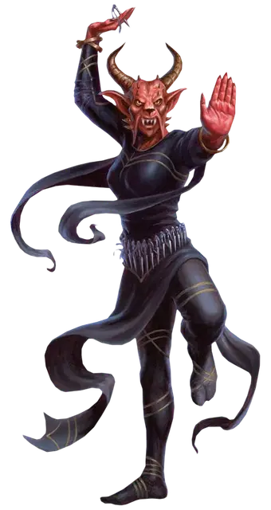

Хобгоблин железная тень
Hobgoblin Iron Shadow
Средний Гуманоид (Гоблиноид), законно-злой

Класс Доспеха 15
Хиты 32 (5к8 + 10)
Скорость 40 футов
| мод | спас | ||
|---|---|---|---|
| СИЛ | 14 | +2 | +2 |
| ЛОВ | 16 | +3 | +3 |
| ТЕЛ | 15 | +2 | +2 |
| мод | спас | ||
|---|---|---|---|
| ИНТ | 14 | +2 | +2 |
| МДР | 15 | +2 | +2 |
| ХАР | 11 | +0 | +0 |
Навыки Акробатика +5, Атлетика +4, Скрытность +5
Чувства тёмное зрение 60 футов, пассивное Восприятие 12
Языки Общий, Гоблинский
Опасность 2 (450 опыта)
Бонус мастерства +2
Среда обитания Лес, Луг, Холмы
Особенности
Использование заклинаний. Хобгоблин является заклинателем 2-го уровня. Его заклинательные способности основаны на Интеллекте (Сл спасброска от заклинаний 12, +4 к попаданию заклинаниями). У него подготовлены следующие заклинания волшебника:
• Заговоры (неограниченно): малая иллюзия [minor illusion], фокусы [prestidigitation], меткий удар [true strike].
• 1 уровень (3 ячейки): очарование личности [charm person], маскировка [disguise self], поспешное отступление [expeditious retreat], безмолвный образ [silent image].
Защита без доспехов. Пока хобгоблин не носит доспехов и щита, к его КД добавляется его модификатор Мудрости.
Действия
Мультиатака. Хобгоблин совершает четыре атаки, каждая из которых может быть безоружным ударом или атакой дротиком. Он также один раз может использовать Прогулку по теням, или до или после атак.
Безоружный удар. . Рукопашная атака оружием: +5 к попаданию, досягаемость 5 футов, одна цель. Попадание: 5 (1к4 + 3) дробящего урона.
Дротик. . Дальнобойная атака оружием: +5 к попаданию, дистанция 20/60 футов, одна цель. Попадание: 5 (1к4 + 3) колющего урона.
Прогулка по теням. . Хобгоблин магически телепортируется вместе со всем переносимым или одетым снаряжением на расстояние до 30 футов в незанятое место, которое может видеть. И место откуда и место куда он перемещается должны быть в тусклом свете или темноте.
Описание
Железные Тени – монахи хобгоблинов, которые служат тайной полицией, разведчиками и убийцами. Среди прочих хобгоблинов они занимаются шпионажем для выявления предателей и бунтарей.
Обучение в тайне. Железные Тени набираются из любых хобгоблинов. Каждый член организации постоянно выискивает новых потенциальных рекрутов среди тех, чьи ловкость и выносливость равняются только их железной преданности воле Маглюбиета.
Кандидат в рекруты проходит серию испытаний, предназначенных для выявления какого–либо потенциала для предательства. Тех, кто не проходит испытания, убивают, а те, кто проходит, получают секретные тренировки в боевых искусствах и магии. Это обучение –долгий и сложный процесс, многие соискатели не заканчивают его, и может пройти много лет, в течение которых Железные Тени вообще не принимают новых членов в свои ряды. Пока рекрут проходит обучение, он служит Железным Теням, ища и сообщая о подозрительном поведении.
Мастера тени и кулака. Когда обучение рекрута завершается, он будет готов применять смертоносную комбинацию техники невооруженного боя и теневой магии, чтобы вводить в заблуждение и сражать врагов. Он продолжает следить за другими хобгоблинами, но также теперь уполномочен предпринимать попытки убийств и шпионские миссии, как против врагов, так и среди гоблиноидов. Эти миссии назначаются им жрецами Маглюбиета, которые зорко следят за сообществом гоблиноидов, чтобы оно функционировало в соответствии с волей Маглюбиета.
Дьяволы в масках. Железные Тени, находящиеся на тайном задании, носят маски, сделанные так, чтобы напоминать дьяволов, с целью и скрыть их личность, и вселить страх в сердца врагов. Их маски также означает предполагаемое происхождение их боевых техник. Жрецы Маглюбиета проповедуют, что Великий украл секреты теней у архидьявола, и теперь они позволяют его последователям скрывать свою личность, перемещаться между тенями и создавать иллюзии для запутывания врагов.
См. дополнительно статью: "Бестиарий: Хобгоблины"